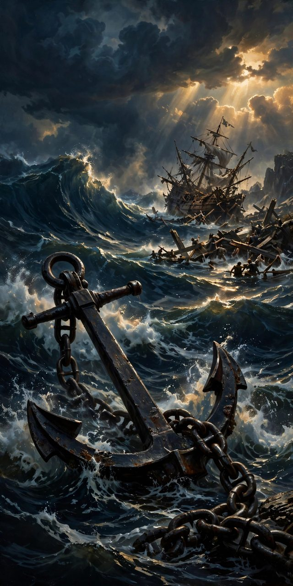

"We have this as a sure and steadfast anchor of the soul, a hope that enters into the inner place behind the curtain."
Hebrews 6:19 (ESV)
The Vessels That Go Down — and the God Who Counts the Survivors
The Bible is full of ships, and a striking number of them sink. That is not an accident of storytelling. From Genesis to Revelation, God keeps putting His people in vessels on dangerous water — and He keeps teaching the same lesson from two directions: the vessel can break, and the people of God still come through. Some wrecks in Scripture are rescue stories. Some are warnings. One of them is the most detailed sea disaster recorded in the ancient world. Here is the history — with the specs, the numbers, and the names — and then what it means for a life that feels like it is going down.
1. The Ark — The Vessel That Carried the World Through
Before there was a wreck, there was a rescue ship, and God dictated its blueprints: "Make yourself an ark of gopher wood. Make rooms in the ark, and cover it inside and out with pitch. This is how you are to make it: the length of the ark 300 cubits, its breadth 50 cubits, and its height 30 cubits. Make a roof for the ark, and finish it to a cubit above, and set the door of the ark in its side. Make it with lower, second, and third decks" (Genesis 6:14-16). At roughly eighteen inches to the cubit, that is a vessel about 450 feet long, 75 feet wide, and 45 feet high — built by a man who had never seen rain, hundreds of miles from any sea. Through that vessel, Peter says, "eight persons, were brought safely through water" (1 Peter 3:20). The first ship in the Bible is not a wreck story. It is a salvation story — judgment all around it, and every soul inside the vessel saved.
2. Jonah's Ship — The Wreck That Almost Was
Jonah bought a ticket on a ship to Tarshish to run from God, and the sea found him out: "the LORD hurled a great wind upon the sea, and there was a mighty tempest on the sea, so that the ship threatened to break up" (Jonah 1:4). The specs of a near-wreck: the mariners threw the cargo into the sea to lighten the ship (1:5); every sailor cried out to his own god; the captain woke the prophet asleep in the inner part of the ship; lots were cast and fell on Jonah. And here is the turn: the man who caused the storm became the way out of it — "Pick me up and hurl me into the sea" (1:12) — and the moment Jonah went over, "the sea ceased from its raging," and the pagan sailors "feared the LORD exceedingly, and they offered a sacrifice to the LORD and made vows" (1:15-16). The ship did not break. The man running from God did — and every sailor on board came to God because of the storm.
3. Psalm 107 — The Pattern of Every Shipwreck Rescue
Psalm 107 is the Bible's shipwreck psalm, and it gives the pattern in full: "Some went down to the sea in ships, doing business on the great waters... For he commanded and raised the stormy wind, which lifted up the waves of the sea. They mounted up to heaven; they went down to the depths; their courage melted away in their evil plight; they reeled and staggered like drunken men and were at their wits' end. Then they cried to the LORD in their trouble, and he delivered them from their distress. He made the storm be still, and the waves of the sea were hushed. Then they were glad that the waters were quiet, and he brought them to their desired haven" (Psalm 107:23-30). Storm. Cry. Stillness. Haven. Hold that order — you will see it again.
4. The Master in the Boat — Two Storms, Two Lessons
When the storm hit the disciples' boat on Galilee, "the waves were breaking into the boat, so that the boat was already filling" — and Jesus was "in the stern, asleep on the cushion" (Mark 4:37-38). He rebuked the wind: "Peace! Be still!" and "there was a great calm" (4:39). The vessel did not survive because it was strong; it survived because of who was in it. On another night the boat was "beaten by the waves, for the wind was against them" (Matthew 14:24), and Peter walked on the water, sank, and cried the shortest prayer in the Bible — "Lord, save me" — and Jesus "immediately reached out his hand and took hold of him" (14:30-31). And once, the catch was so great that the nets were breaking and both boats "began to sink" under the weight of blessing (Luke 5:6-7). Vessels in the Gospels fill, sink, and strain — and not one of them goes down with Jesus aboard.
5. Tyre — The Magnificent Ship That Sank in the Heart of the Seas
Ezekiel 27 is the Bible's shipbuilding chapter: a whole lament over Tyre written as if the city were a great merchant ship — and God gives her specs like a proud shipwright before He gives her end: "They made all your planks of fir trees from Senir; they took a cedar from Lebanon to make a mast for you. Of oaks of Bashan they made your oars; they made your deck of pines inlaid with ivory, brought from the coasts of Cyprus. Of fine embroidered linen from Egypt was your sail... blue and purple from the coasts of Elishah made your awning" (Ezekiel 27:5-7). Then the verdict: "Your rowers have brought you out into the high seas. The east wind has wrecked you in the heart of the seas. Your riches, your wares, your merchandise... have sunk into the heart of the seas on the day of your fall" (27:26-27). Psalm 48:7 says the same in one line: "By the east wind you shattered the ships of Tarshish." Tyre is the Bible's warning wreck: the most beautiful vessel ever described, sunk by pride in the deep water — every plank accounted for, and not one plank could save her.
6. Acts 27 — The Greatest Shipwreck Ever Recorded
Then comes the wreck the whole history was sailing toward. Paul, a prisoner, was put aboard "a ship of Alexandria sailing for Italy" (Acts 27:6), loaded with grain from Egypt — and Luke records the disaster with a sailor's precision:
- The storm: "a tempestuous wind, called the northeaster" (27:14) — the Euroclydon — drove them for fourteen days (27:27) until "neither sun nor stars appeared for many days, and all hope of our being saved was at last abandoned" (27:20).
- The seamanship: they undergirded the ship — passing cables around the hull to hold her together (27:17); they threw the cargo overboard, then "with their own hands they threw the ship's tackle" (27:19); they threw the wheat into the sea to lighten her for the run to the reef (27:38).
- The soundings: approaching land in the dark, "they took soundings and found twenty fathoms; a little farther on they took soundings again and found fifteen fathoms" (27:28) — the bottom rising under them.
- The anchors: "they let out four anchors from the stern and prayed for day to come" (27:29).
- The count: "We were in all 276 persons in the ship" (27:37).
- The promise, given before the wreck and standing in the middle of it: "there will be no loss of life among you, but only of the ship" (27:22); "not a hair is to perish from the head of any of you" (27:34).
- The wreck itself: "the ship struck a reef, she ran aground. The bow stuck and remained immovable, and the stern was being broken up by the surf" (27:41).
- The outcome, to the soul: the centurion kept Paul alive, ordered the swimmers out first, "and the rest on planks or on pieces of the ship. And so it was that all were brought safely to land" (27:43-44).
The ship: lost. The souls: 276 out of 276. And Acts 27 was not even Paul's only wreck — he told the Corinthians years before, "Three times I was shipwrecked; a night and a day I was adrift at sea" (2 Corinthians 11:25). The apostle of the anchor knew deep water personally.
7. Shipwrecked Faith — Where Scripture Applies It to You
Paul himself takes the word off the sea and puts it in the soul: hold "faith and a good conscience. By rejecting this, some have made shipwreck of their faith" (1 Timothy 1:19) — he names Hymenaeus and Alexander. And James uses the vessel for the tongue: "Look at the ships also: though they are so large and are driven by strong winds, they are guided by a very small rudder wherever the will of the pilot directs" (James 3:4). Scripture's own application is plain: a life, like a ship, turns on small steering and stands or falls on what it holds onto.
How It Applies — Five Things the Wrecks Teach
First: the vessel can be lost and the souls all saved. Acts 27 is God's permanent picture of a breaking life: the ship went to pieces in the surf and not one person was lost. What is breaking in your life right now may be the vessel — your plans, your strength, your old way of living. The promise was never that the ship would hold. The promise is that you will.
Second: God saves people on pieces of the wreck. "The rest on planks or on pieces of the ship" (27:44). The broken pieces of Paul's ship became flotation for people who could not swim. That is what a testimony is: the wreckage of your life, held out to somebody else who is going under. The parts of your story you would most like to sink are very often the planks God uses to float somebody else home.
Third: anchors do not stop storms — they stop drifting. In Acts 27 the four anchors held the ship off the rocks until daylight; they did not calm the sea. And Hebrews tells us where the Christian's anchor is actually set: "We have this as a sure and steadfast anchor of the soul, a hope that enters into the inner place behind the curtain, where Jesus has gone as a forerunner on our behalf" (Hebrews 6:19). Luther's image for that verse was an anchor cast the opposite way from every sailor's — not down into the sea, but up into heaven itself. It holds, not because the water around the ship is calm, but because of where it is fastened.
Fourth: faith can genuinely be shipwrecked — and the cause is named. Not the storm. Not the size of the waves. Paul says the wreck of faith comes by pushing away a good conscience (1 Timothy 1:19) — steering by a broken rudder until the hull is on the rocks. The bad news must be said plainly, because it points to the good news: what is pushed away can be taken up again; the man who wrote that warning is the same man God saved out of the sea four times.
Fifth: the story ends at a haven, not at the wreck. "He brought them to their desired haven" (Psalm 107:30). Malta was not Rome, but it was land, fire, and kindness (Acts 28:1-2), and Paul reached Rome in the end — on another ship, because the mission survives the vessel. Every wreck in God's history is a chapter, never the last page.
Sit With This
- Observe: In Acts 27, what exactly was lost, and what exactly was saved? Read verses 22, 37, and 44 together and list them side by side.
- Interpret: Why do you think God let the ship break if every person was going to be saved anyway? What does the wreck itself teach that a safe arrival would not have?
- Apply: Which piece of your own wreckage — a failure, a loss, a broken season — could become a plank for somebody else, if you stopped trying to sink it and started holding it out?
The ship broke. The souls came through — every one of them. And some of them floated home on the pieces.
The Hope Connection — Meeting others where they are in the Name of Jesus.
Christ Proclaimed. Jesus is Lord.
© 2026 The Hope Connection
The Hope Connection
Meeting others where they are in the Name of Jesus — testimony and teaching on the hope that holds.